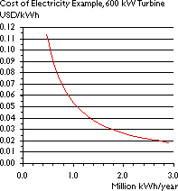
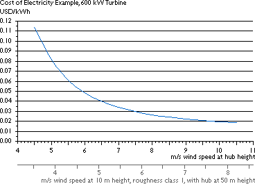

Wind Energy Economics
There
is no Such Thing as a Single Price for Wind Energy
As we learned from the page on energy output, annual
electricity production will vary enormously depending on the amount of wind
on your turbine site. Therefore, there is not a single price for wind energy,
but a range of prices, depending on wind speeds.

 The graph to the
right shows how the cost of electricity produced by a typical Danish 600
kW wind turbine varies with annual production. (We used the example built
into the Wind Energy Economics Calculator to find
the points for the graph).
The graph to the
right shows how the cost of electricity produced by a typical Danish 600
kW wind turbine varies with annual production. (We used the example built
into the Wind Energy Economics Calculator to find
the points for the graph).
 The relationship is really very simple: If you produce twice as much
energy per year, you pay half the cost per kilowatt hour. (If you believe
that maintenance costs increase with turbine use, the graph might not be
exactly true, but close to true).
The relationship is really very simple: If you produce twice as much
energy per year, you pay half the cost per kilowatt hour. (If you believe
that maintenance costs increase with turbine use, the graph might not be
exactly true, but close to true).
If we use the graph above, plus the example from the page on income from wind turbines we find the relationship between wind speeds and costs per kWh below. Remember, that everything on this page is based on our examples, so you cannot use the graph to predict costs for any particular project. As an example, if your real rate of interest is 6 per cent per annum, rather than 5, costs are approximately 7.5 per cent higher than shown in the graph. When you use the Wind Energy Economics Calculator in a moment, you can use your own data to compute the cost of electricity.

The example is for a 600 kW wind turbine with project lifetime of 20 years; investment = 585,000 USD including installation; operation & maintenance cost = 6750 USD/year; 5% p.a. real rate of interest; annual turbine energy output taken from power density calculator using a Rayleigh wind distribution (shape factor = 2).
You should note that wind speeds at 50 metre hub height will be some 28 to 35 per cent higher* than at 10 metre height, which is usually used for meteorological observations, cf. the wind speed calculator page. Look at the grey axis at the bottom of the graph to see how wind speeds at 10 metre height may translate into higher wind speeds. A wind speed of e.g. 6.25 m/s at 10 metre height in roughness class 1 will translate into 8 m/s at 50 metre hub height.
* For roughness classes between 1 and 2.

|
Back | Home | Forward |
© Copyright 1998 Soren Krohn. All rights reserved.
Updated 26 September 2000
http://www.windpower.org/tour/econ/economic.htm